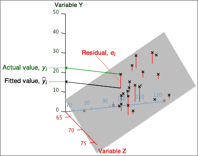

Fitted values
A linear model provides a prediction of y for any values of x and z. For the i'th individual, the prediction is called its fitted value,
| fitted value, | = b0 + b1 xi + b2 zi |
Residuals
The difference between the fitted value and the actual response is called the individual's residual.
| residual, ei = yi − |
Residuals correspond to vertical distances between crosses in a 3-dimensional scatterplot and the plane representing the model.
